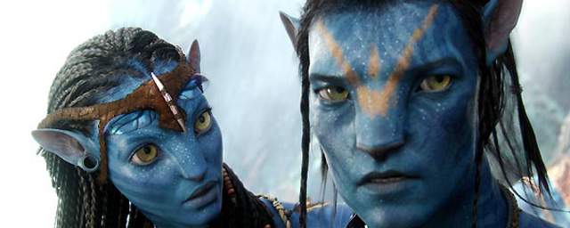

"Avatar" is a 2009 science fiction film directed by James Cameron. The story is set in the future on a distant planet named Pandora, where humans are mining a valuable mineral called unobtanium. The protagonist, played by Sam Worthington, is a paraplegic Marine who is sent to Pandora in a genetically engineered body called an Avatar, which allows him to walk again. He soon finds himself caught between the mining colony and the native Pandora inhabitants, the Na'vi, and must decide where his loyalty lies. The film features groundbreaking visual effects and motion capture technology to create the alien world and its inhabitants.
